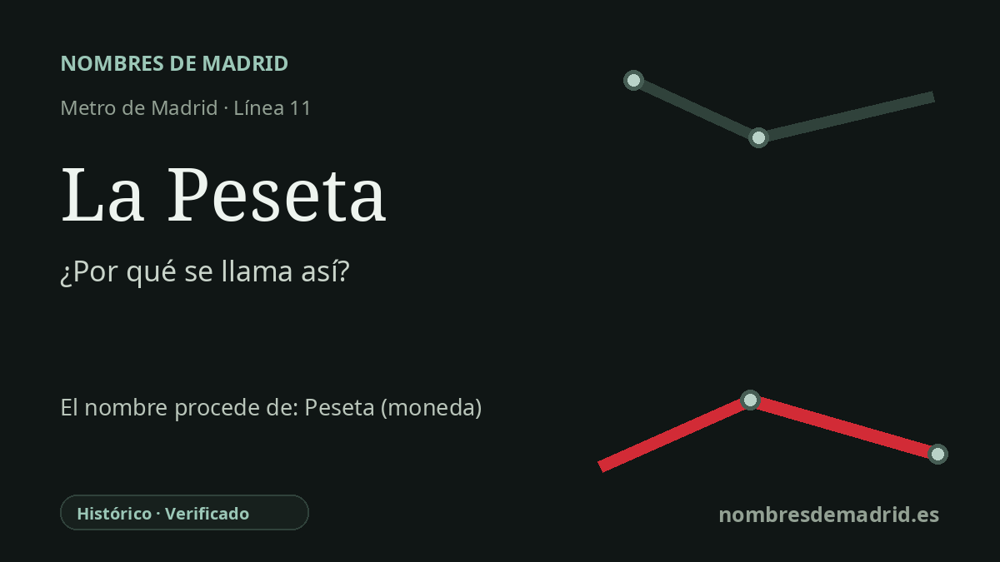

Publicado el · Investigación de Nombres de Madrid · Cómo verificamos cada origen · 9 fuentes consultadas
Respuesta rápida
La Peseta toma su nombre de la Avenida de la Peseta, eje principal del PAU de Carabanchel. La avenida forma parte de una toponimia local que recordaba la antigua moneda española justo cuando el euro sustituyó a la peseta.
La historia del nombre
La estación de La Peseta toma su nombre de la Avenida de la Peseta, avenida que figura en la ficha de accesos del Consorcio Regional de Transportes de Madrid. La parada se abrió en la línea 11 dentro del PAU de Carabanchel, un gran desarrollo urbano de comienzos del siglo XXI en el suroeste de Madrid.
Detrás del nombre está la peseta, antigua moneda nacional de España. El Banco de España indica que un decreto del Gobierno de 19 de octubre de 1868 estableció la peseta como unidad básica del sistema monetario español; las primeras monedas de peseta se acuñaron en Madrid en 1869, en la ceca que más tarde sería la Fábrica Nacional de Moneda y Timbre-Real Casa de la Moneda.
El nombre de la avenida pertenece a un momento muy concreto de la historia urbana madrileña. Una investigación sobre el PAU de Carabanchel señala que muchas de sus calles recibieron nombres de monedas españolas porque el barrio se estaba construyendo cuando España dejaba atrás la peseta y adoptaba el euro. La Avenida de la Peseta se convirtió en el eje principal este-oeste del desarrollo y, en el uso cotidiano, dio a la estación y a buena parte del entorno una referencia fácil de reconocer.
El nombre de la estación también conserva una pequeña disputa local. En 2006, la ampliación de la línea 11 llegó al PAU con tres nuevas estaciones, entre ellas La Peseta. Actas posteriores de la Junta Municipal de Carabanchel recogen que colectivos vecinales habían pedido el nombre de Salvador Allende para la avenida principal y para la estación de la línea 11, pero el gobierno de entonces prefirió La Peseta; una calle cercana, y más tarde un parque, sí recibieron el nombre de Allende.
El origen, por tanto, está bien apoyado pero tiene varias capas: de forma directa, la estación se llama así por la Avenida de la Peseta; históricamente, la avenida recuerda la antigua moneda española; localmente, el nombre refleja la toponimia monetaria del PAU a comienzos de los años 2000. Conviene corregir un detalle en textos públicos: el euro entró en circulación el 1 de enero de 2002, pero pesetas y euros convivieron como moneda de curso legal hasta el 28 de febrero de 2002.